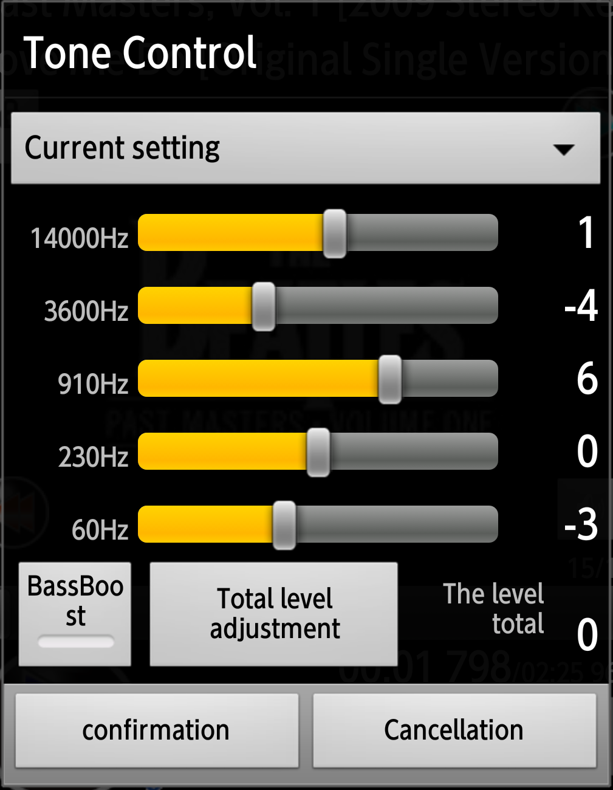

|
Music player usable commonly MaraSongs |
|
Explanation of the player |
||
|
At the time of start after the second, the player of MaraSongs starts in the state that can reproduce from a continuance
of the music that I heard last time. There are the following functions to the player screen of MaraSongs. |
||
Title bar |
(It is ToolBer after Android5) | ||
|
I display a list of player screens name reproducing in ToolBar.
There is a menu button in the right-side end. |
|||
Head area |
|||
| . | Common matter |
|
|
| 1;Artist |
It is an artist name performed credit of by the record jackets which included the guest participation.
|
||
| 2;Album | It is the reproducing album which I extracted by the artist name mentioned above. | ||
| 3;Title | It is a title of a musical composition reproducing in the music that I extracted by an album name mentioned above. | ||
Central part |
|||
| . | Album art | If the images such as jacket photographs are set, I display the image. | |
|
Visualizer |
I display a visualizer expressing the sound that reproduces when I perform a flick of a jacket
photograph to the left visually.
|
||
| Lyric indication |
I display a Lyric when I perform a flick of a jacket photograph to the right.
|
|
|
|
I locate a "music forwarding" button to "music return", the right to the left of the indication department. It may be a strange design ・Position not to tap by mistake ・Reproduction / stop, the order forwarding make trial and error by possible placement with one hand. |
|||
|
Volume adjustment button |
It is the button which I established because there was the case which cannot operate a volume adjustment button depending on a stand and a folder.
|
||
|
Return button |
It "is a return button" returning to music in front that there is under the volume adjustment button.
|
||
| Forwarding button |
It "is a forwarding button" to send to the next music that is to the right of the album art. I do the device that malfunction does not produce even if I tap it like return consecutively. |
||
The lower part |
|||
| seek bar | I operate here and move a reproduction point at any position in the music at the same time to show a reproduction position of music. | ||
| When I perform the reproduction between two points, I display initiation and termination time under the bar and narrow down the movable range of the bar to only a reproduction section. | |||
| Reproduction / pose button |
I tap it and change reproduction / pose. Because you hang a pose not to be surprised start is smart just after that, to sound and start, I tap this button, and, please start reproduction. |
||
| . | Accompaniment information area | ||
| song counter |
I display the number of the music of lists of any program or / listing.
| ||
| Reproduction position / reproduction time |
"It is "a reproduction position" to show a reproducing position in the elapsed time from a start and reproduction time" indicating the length of the music now.
| ||
| Progress from start |
I display it with the number of / reproduction music at time in the elapsed time from a reproduction start how long the second line used this application consecutively.
|
||
| Bluetooth information |
When I was connected, I display an apparatus name and the situation. *I make only toast indication at the time of the connection now. |
||
| Menu to display with a button(ToolBar menu of the top) | ||||
| Function, I gathered the functions that I touched it by a function to use from a player screen carelessly, and seemed to feel troublesome | ||||
| Random reproduction |
|
|||
| Repeat reproduction |
|
|
||
| equalizer |
|
 | ||
| reverberation |
|
|||
| Others |

|
|||
| Preference screen | I open up a Preference screen. I display the operation of a function (thing not to operate again basically if I set it once) having lowest operation frequency and the situation of resume and a stored file. |
|||
| Help indication | It is the indication screen using the device of web. I open the support page of the Web. |
|||
| Quit | I stop reproducing music and I record reproducing music and reopening point and finish application. | |||
| . | Key layout (If movement is different in a recent model because it is the confirmation with a considerably old model, please forgive it) | |||
| In principle, I choose a lower item if I push an upper item, the bottom if I push it over 4 arrow keys. | ||||
| It is the right of 4 arrow keys other than forwarding |
I choose forwarding. ・Similarly, return is chosen when I push the left of 4 arrow keys other than return ・I send it and then select a button together contralateral return with right and left key. |
|||
| It is controlled 4 arrow keys in a bar to seek | A knob is chosen forcibly, and the bar to seek coordinates a reproduction point in the wrong way. | |||